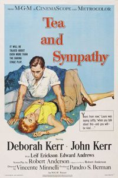

Tea and Sympathy
1956 film by Vincente Minnelli
Tea and Sympathy is a 1956 American drama film and an adaptation of Robert Anderson's 1953 stage play of the same name directed by Vincente Minnelli and produced by Pandro S. Berman for MGM in Metrocolor. The music score was by Adolph Deutsch and the cinematography by John Alton. Deborah Kerr, John Kerr and Leif Erickson reprised their original Broadway roles.
Trivia
- Tea and Sympathy premiered on Broadway in 1953 and ran over 700 performances.
- Directed by Elia Kazan, and written by Robert Anderson, the play starred Deborah Kerr as Laura, the wife of a schoolmaster who becomes affectionate towards Tom, a young student at her husband Bill's all-boys prep school, who is accused of being a homosexual.
- In a generous gesture, Laura dedicates herself to help enable Tom's masculinity.
Filming Locations
- Malibu
Previous Showings
3 Runs • 2 Festivals
3,441 tickets sold
All runs on record (3):
- July 13 - 15, 1990 · 2,218 ticketsw/ Lust for Life
- May 21 - 23, 2006 · 747 ticketsRonald Colmanw/ Beau Geste, Lust for Life
- August 15 - 16, 2024 · 476 ticketsDirected by Vincente Minnelliw/ Designing Woman